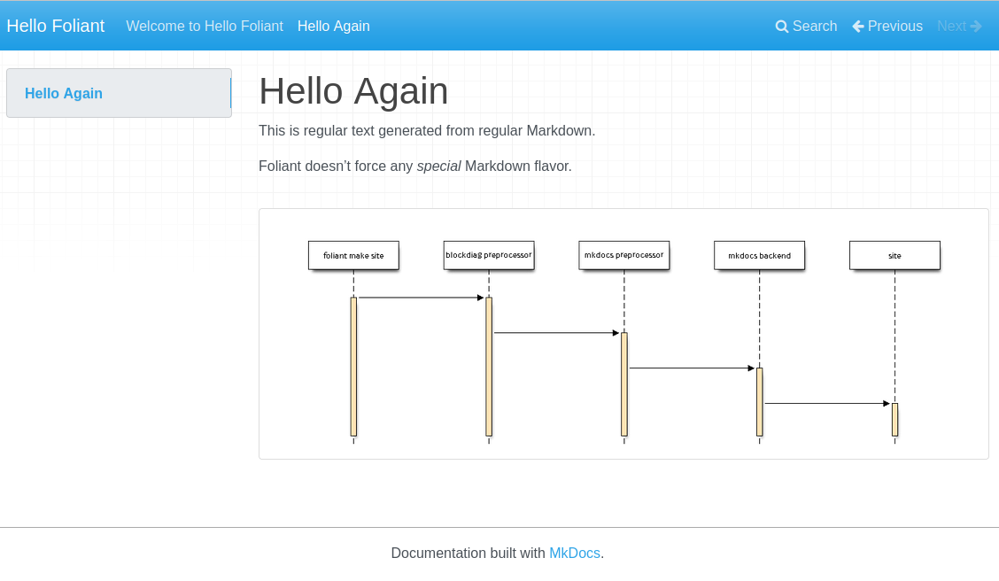
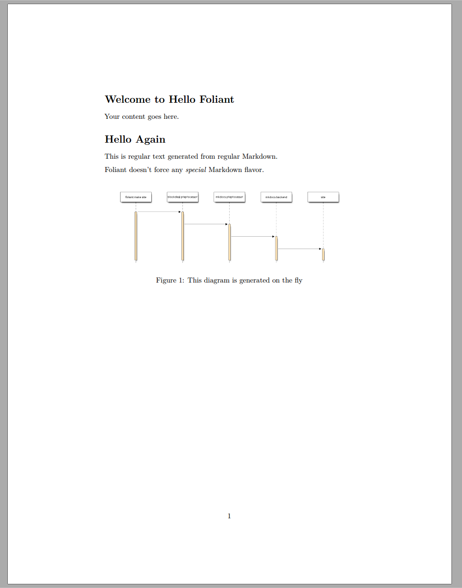
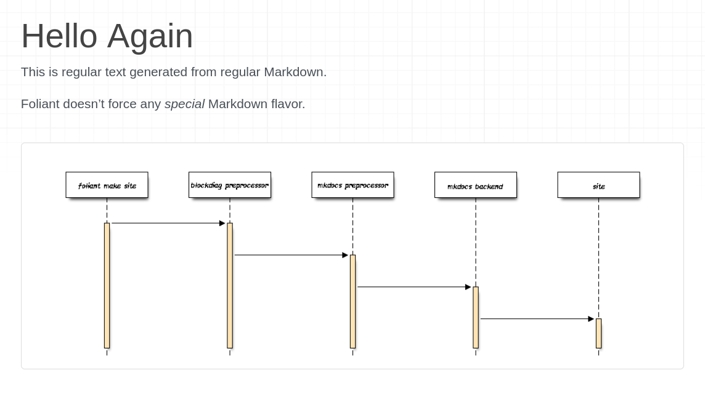
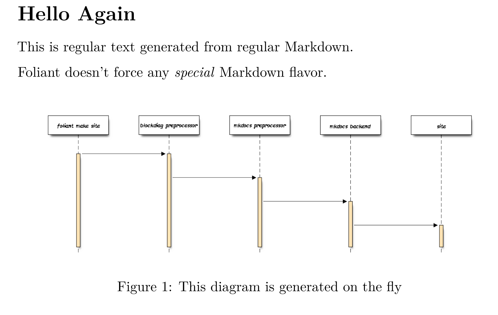

Your First Foliant Project¶
In this tutorial, you’ll learn how to use Foliant to build websites and pdf documents from a single Markdown source. You’ll also learn how to use Foliant preprocessors.
It is recommended to run Foliant through Docker to get consistent results on different machines, but it's also perfectly fine to run it natively (e.g. as a pure CLI tool without virtualization). In this tutorial, we will show the example commands for both native way (these will go first) and the Docker way (these will follow).
Create New Project¶
All Foliant projects must adhere to a certain structure. Luckily, you don’t have to memorize it thanks to the Init extension.
You should have installed it during Foliant installation and it’s included in Foliant’s default Docker image.
To use it, run foliant init command
$ foliant init
Enter the project name: Hello Foliant
Generating Foliant project
─────────────────────
Project "Hello Foliant" created in hello-foliant
To do the same with Docker, run
$ docker run --rm -it --user $(id -u):$(id -g) -v $(pwd):/usr/src/app -w /usr/src/app foliant/foliant init
Enter the project name: Hello Foliant
Generating project... Done
─────────────────────
Project "Hello Foliant" created in hello-foliant
The init command created a structure for the Foliant project in hello-foliant subfolder.
$ cd hello-foliant
$ tree
.
├── docker-compose.yml
├── Dockerfile
├── foliant.yml
├── README.md
├── requirements.txt
└── src
└── index.md
1 directory, 6 files
foliant.yml is your Project Configuration file.
src is the directory for your Markdown documents. Currently, there’s just one file there called index.md.
requirements.txt lists the Python packages required for the project: Foliant backends and preprocessors, MkDocs themes, and whatnot. When the Docker image for the project is built, these requirements will be installed in it.
Dockerfile and docker-compose.yml are necessary to build the project in a Docker container.
Build Site¶
To build a site you will first need a suitable backend. To catch up with the terminology, check this article, but in short, backends are Foliant modules responsible for converting Markdown sources into the final documentation format.
Let’s start with MkDocs backend. First, install it using the following command
pip3 install foliantcontrib.mkdocs
Docker users would normally need to add this package to the requirements.txt file instead, but mkdocs is already there by default if you used init to generate project structure.
To build a site, in the project directory, run
$ foliant make site
Parsing config... Done
Applying preprocessor mkdocs... Done
Applying preprocessor _unescape... Done
Making site with MkDocs... Done
────────────────────
Result: Hello_Foliant-2020-05-25.mkdocs
Or, with Docker Compose
$ docker-compose run --rm foliant make site
Parsing config... Done
Applying preprocessor mkdocs... Done
Applying preprocessor _unescape... Done
Making site with MkDocs... Done
────────────────────
Result: Hello_Foliant-2020-05-25.mkdocs
That’s it! Your static, MkDocs-powered website is ready. To look at it, use any web server, for example, Python’s built-in one.
$ python3 -m http.server -d Hello_Foliant-2020-05-25.mkdocs
Serving HTTP on 0.0.0.0 port 8000 (http://0.0.0.0:8000/) ...
Open localhost:8000 in your web browser. You should see something like this

Build PDF¶
To build PDF with Pandoc natively, first you will need to install Pandoc itself and TexLive, check Foliant installation page for instructions.
Then, in the project directory, run
$ foliant make pdf
Parsing config... Done
Applying preprocessor flatten... Done
Applying preprocessor _unescape... Done
Making pdf with Pandoc... Done
────────────────────
Result: Hello_Foliant-2020-05-25.pdf
To build pdf in Docker container, first uncomment foliant/foliant:pandoc in your project’s Dockerfile
- FROM foliant/foliant
+ # FROM foliant/foliant
# If you plan to bake PDFs, uncomment this line and comment the line above:
- # FROM foliant/foliant:pandoc
+ FROM foliant/foliant:pandoc
COPY requirements.txt .
RUN pip3 install -r requirements.txt
Note
Run
docker-compose buildto rebuild the image from the new base image if you have previously rundocker-compose runwith the old one. Also, run it whenever you need to update the versions of the required packages fromrequirements.txt.
Then, run this command in the project directory
$ docker-compose run --rm foliant make pdf
Parsing config... Done
Applying preprocessor flatten... Done
Applying preprocessor _unescape... Done
Making pdf with Pandoc... Done
────────────────────
Result: Hello_Foliant-2020-05-25.pdf
Your standalone pdf documentation is ready! It should look something like this

Edit Content¶
Your project’s content lives in .md files inside the src folder. You can organize it into multiple files and subfolders inside the src as you please.
Foliant encourages pure Markdown syntax as described by John Gruber. Pandoc, MkDocs, and other backend-specific additions are allowed, but we strongly recommend putting them in <if>...</if>.
Let's create a file hello.md inside src folder
$ touch src/hello.md
And fill it with some content. For example
# Hello Again
This is regular text generated from regular Markdown.
Foliant doesn’t force any *special* Markdown flavor.
Now you have two files (or chapters) inside src, but Foliant knows only about one of them. To add hello.md to the project, open foliant.yml and add the new chapter to the chapters list
title: Hello Foliant
chapters:
- index.md
+ - hello.md
Let's rebuild the project to see the new page.
The native command
foliant make pdf && foliant make site
Parsing config... Done
Applying preprocessor flatten... Done
Applying preprocessor _unescape... Done
Making pdf with Pandoc... Done
────────────────────
Result:
Hello_Foliant-2020-05-25.pdf
Parsing config... Done
Applying preprocessor mkdocs... Done
Applying preprocessor _unescape... Done
Making site with MkDocs... Done
────────────────────
Result: Hello_Foliant-2020-05-25.mkdocs
The command for Docker
$ docker-compose run --rm foliant make site && docker-compose run --rm foliant make pdf
Parsing config... Done
Applying preprocessor mkdocs... Done
Applying preprocessor _unescape... Done
Making site with MkDocs... Done
────────────────────
Result: Hello_Foliant-2020-05-25.mkdocs
Parsing config... Done
Applying preprocessor flatten... Done
Applying preprocessor _unescape... Done
Making pdf with Pandoc... Done
────────────────────
Result: Hello_Foliant-2020-05-25.pdf
And see the new page appear on the site and in the pdf document


Use Preprocessors¶
Preprocessors are additional Foliant packages that transform your Markdown chapters in different ways. You can do all kinds of stuff with them:
- include remote Markdown files or their parts in the source files,
- perform auto-replace,
- render diagrams from their textual description on the build,
- restructure the project source or compile it into a single file for a particular backend.
Preprocessors don't touch your sources in the src folder. Instead, they copy them into a temporary directory and transform the fresh copies on each build.
In fact, you have already used two preprocessors! Look at the output of the foliant make commands and note the lines Applying preprocessor mkdocs and Applying preprocessor flatten. The mkdocs preprocessor made your files compatible with MkDocs’ requirements, and the flatten preprocessor was used to squash the project source into one file to produce a single PDF with Pandoc. These preprocessors were called by MkDocs and Pandoc backends implicitly.
Now let's add a preprocessor into the pipeline ourselves. We've chosen Blockdiag preprocessor for this tutorial.
Embed Diagrams with Blockdiag¶
Blockdiag is a Python app for generating diagrams. Blockdiag preprocessor extracts diagram descriptions from the project source and replaces them with the generated images.
First, we need to install the blockdiag preprocessor
$ pip3 install foliantcontrib.blockdiag
Or, if you are building with docker, add foliantcontrib.blockdiag to requirements.txt and rebuild the image with docker-compose build command.
Next, we need to switch on the blockdiag preprocessor in project config. Open foliant.yml and add the following lines
title: Hello Foliant
+
+ preprocessors:
+ - blockdiag
chapters:
- index.md
- hello.md
Then, in hello.md, add the following
Foliant doesn’t force any *special* Markdown flavor.
+ <seqdiag caption="This diagram is generated on the fly">
+ seqdiag {
+ "foliant make site" -> "blockdiag preprocessor" -> "mkdocs preprocessor" -> "mkdocs backend" -> site;
+ }
+ </seqdiag>
Blockdiag preprocessor extends the Markdown syntax of your documentation by adding several tags. Each tag produces a different diagram type. Sequence diagrams are defined with <seqdiag></seqdiag> tag. This is what we used in the sample above. The diagram definition sits in the tag body and the diagram properties such as caption or format are defined as tag attributes.
Rebuild the site with foliant make site or docker-compose run --rm foliant make site and open it in the browser

Rebuild the pdf and see that the diagram is there too

Let’s customize the look of the diagrams in our project by setting their properties in the config file. For example, let’s use a custom font for labels. I’m using the ever-popular Comic Sans font, but you can pick any font that’s available in .ttf format.
Put the font file in the project directory and add the following lines to foliant.yml
preprocessors:
- - blockdiag
+ - blockdiag:
+ params:
+ font: !path comic.ttf
After a rebuild, the diagram on the site and in the pdf should look like this


There are many more params you can define for your diagrams. You can override global params for particular diagrams in their tags. And by combining this preprocessor with Flags you can even set different params for different backends, for example, build vector diagrams for pdf output and bitmap for site
This is a diagram that is rendered to `.png` in HTML and to `.pdf` in pdf:
<blockdiag format="<if targets="site">png</if><if targets="pdf">pdf</if>">
...
</blockdiag>
The possibilities acquired by combining different preprocessors are endless!
Why Foliant Uses XML syntax for Preprocessor Tags
It’s common for Markdown-based tools to extend Markdown with custom syntax for additional functions. There’s no standard for custom syntax in the Markdown spec, so every developer uses whatever syntax is available for them, a different one for every new extension.
In Foliant, we tried our best not to dive into this mess. Foliant aims to be an extensible platform, with many available preprocessors. So we needed one syntax for all preprocessors, but the one that was flexible enough to support them all.
After trying many options, we settled with XML. Yes, normally you’d have a nervous tick when you hear XML, and so would we, but this is one rare case where XML syntax belongs just right:
- it allows to provide tag body and named parameters,
- it’s familiar to every techwriter out there,
- it’s close enough to HTML, and HTML tags are actually allowed by the Markdown spec, so we’re not even breaking the vanilla Markdown spec (almost),
- it’s nicely highlighted in IDEs and text editors.